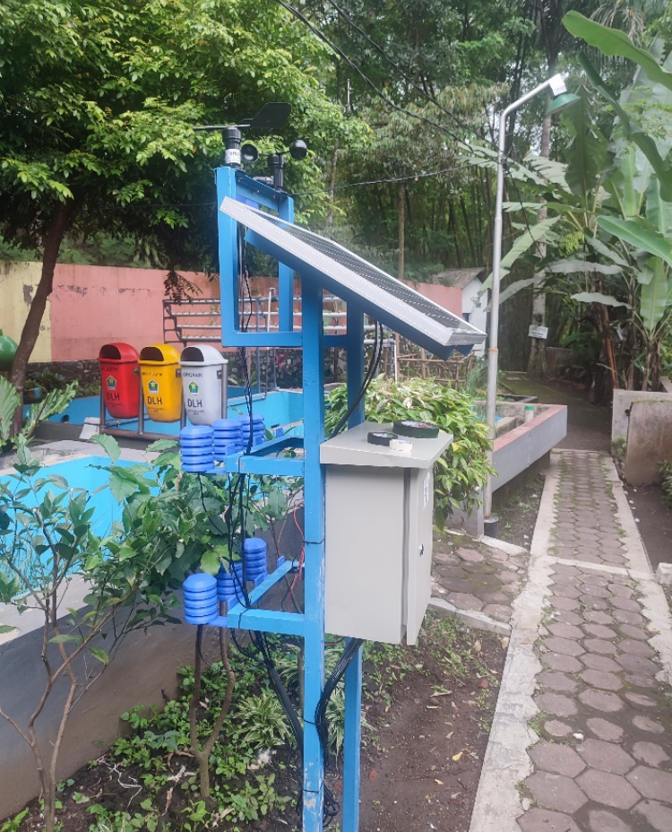

Tentang Telemetering Kualitas Udara dan Iklim

Pada tahun 2019, Kampung RW 07 Kelurahan Tlogomas memperoleh Penghargaan Proklim Utama terkait dengan keberadaan IPAL Komunal di RT 3 dan peran serta masyarakat dalam pengelolaan air limbah, pengelolaan sampah, konservasi air dan ketahanan pangan. Namun keberadaan infrastruktur dan peran serta masyarakat yang mendukung upaya adaptasi dan mitigasi perubahan iklim ini masih belum dilaksanakan seluruh RT di lingkup wilayah RW 7.
Salah satu infrastruktur yang perlu dikembangkan adalah adanya sistem informasi cuaca dan kualitas udara yang mudah diakses oleh warga/pengurus RW dan pemangku kepentingan lainnya. Sistem telemetering pemantauan cuaca dan kualitas udara akan dibangun dengan menempatkan sensor-sensor cuaca dan udara di lingkungan kampung dimana data cuaca dan kualitas udara dikirimkan dan disimpan di Cloud-server melalui jaringan internet. Selanjutnya pengguna dapat mengakses informasi cuaca dan kualitas udara tersebut melalui aplikasi yang dijalankan pada Smartphone.
Kualitas udara atau air quality merupakan kadar kandungan udara berdasarkan konsentrasi polutan di lokasi tertentu. Pada program monitoring ini yang diukur adalah kualitas udara ambien. Udara ambien adalah udara bebas di permukaan bumi pada lapisan troposfer (lapisan udara setebal 16 km dari permukaan bumi) yang berada di dalam wilayah yurisdiksi Republik Indonesia yang dibutuhkan dan mempengaruhi kesehatan manusia, mahluk hidup dan unsur lingkungan hidup lainnya.

Cuaca adalah nilai sesaat dari atmosfer, serta perubahannya dalam jangka pendek di suatu tempat tertentu di permukaan bumi. Sedangkan iklim adalah sintesis atau rata-rata perubahan unsur-unsur cuaca dalam jangka panjang di suatu tempat atau pada suatu wilayah.
Cuaca dan iklim dinyatakan dengan susunan nilai unsur fisika atmosfer yang selanjutnya disebut unsur cuaca atau unsur iklim yang terdiri dari radiasi surya (Watt/m2 ), lama penyinaran surya (jam), suhu udara (C), kelembaban udara (%), tekanan udara (milibar atau mb), kecepatan angin (knot) dan arah angin (derajat), penutupan awan, presipitasi berupa embun, hujan, salju (mm) dan evaporasi maupun evapotranspirasi (mm).
Pada sistem monitoring ini didapatkan hasil monitoring dibandingkan dengan baku mutu yang berlaku PP Nomor 41 Tahun 1999. Baku mutu ini adalah sebagai ukuran batas atau kadar zat, energi, dan/atau komponen yang ada atau yang seharusnya ada dan/atau unsur pencemar yang ditenggang keberadaannya dalam udara ambien.
Total ada tiga sensor yang dipasang dilokasi yaitu sekitar lingkungan Kampung Iklim. Sensor pertama terletak pada lingkungan IPAL dengan koordinat -7.92488, 112.60141, sensor kedua terletak disamping alat barometer dengan koordinat -7.92493, 112.60125, dan sensor ketiga terletak di samping balai RT 3 dengan koordinat -7.92519, 112.60126.